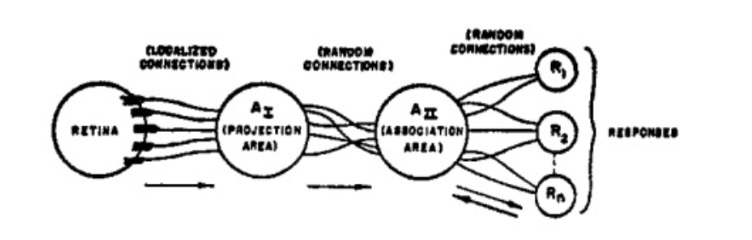
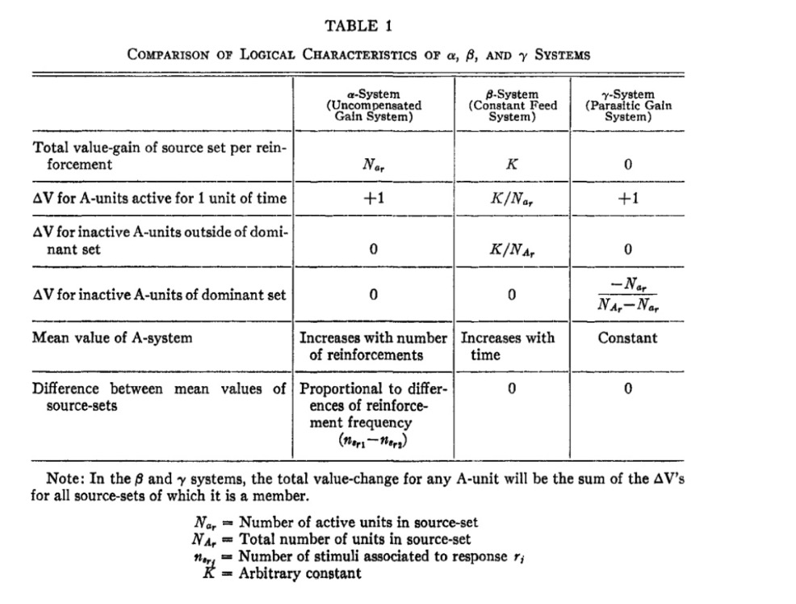
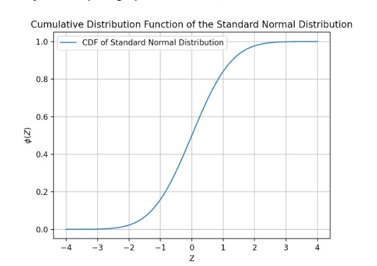
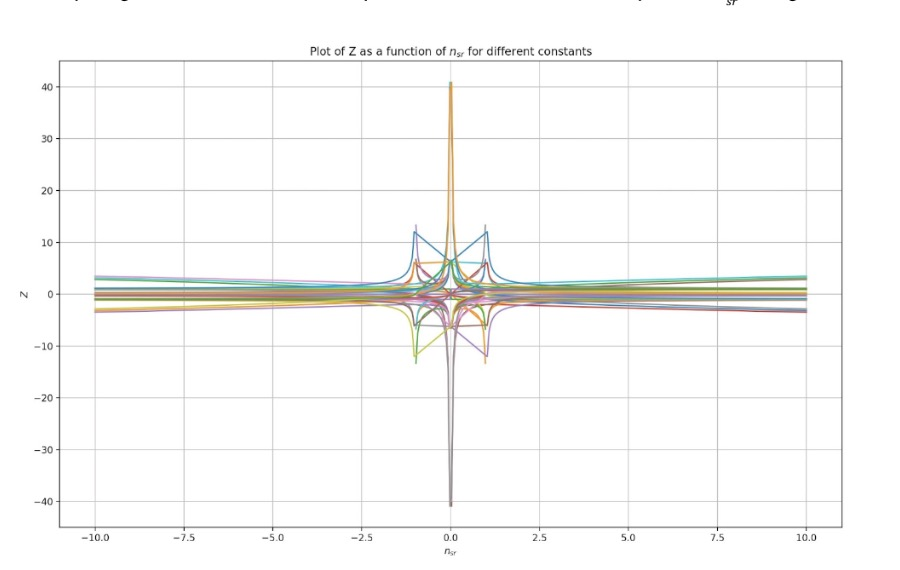
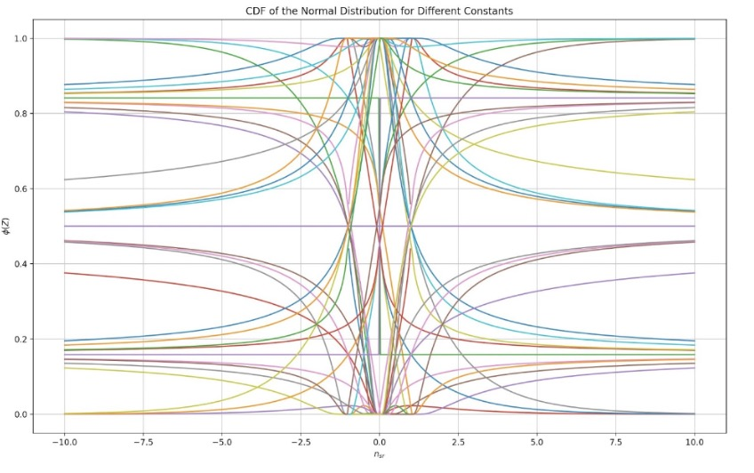
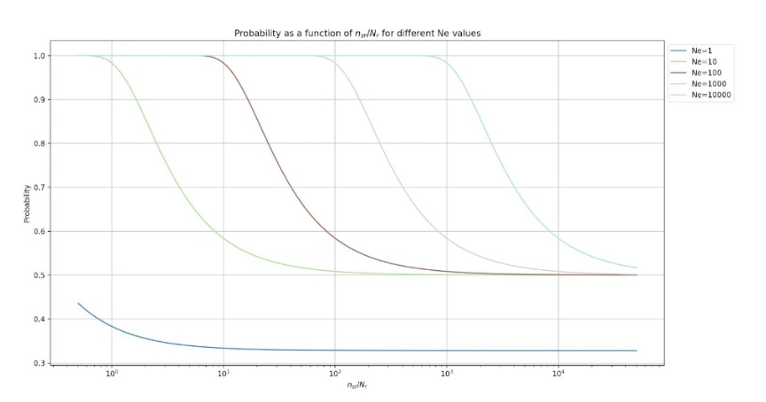
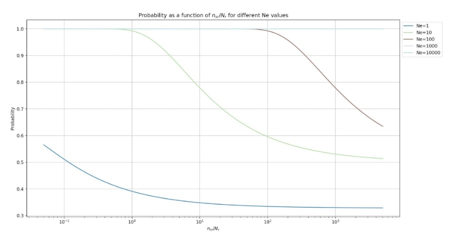
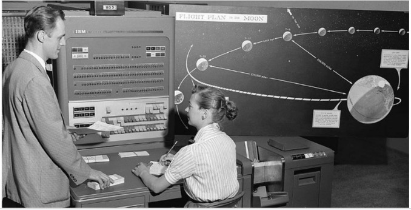

The Perceptron: A Probabilistic Model for Information Storage and Organization in the Brain
Annotated by: Noah Schliesman
Published by Frank Rosenblatt in 1958
Overview
The inception of modern Neural Network theory is largely due to this paper, written by Frank Rosenblatt in 1958 at Cornell Aeronautical Laboratory. Rosenblatt takes a connectionist approach towards neural modeling, with the advent of a perceptron including a retina (input stimulus), projection area, association area, and responses (output). He examines the characteristics and performance of an uncompensated gain system, constant feed system, and parasitic gain system in the context of a sum-dominant or mean-dominant association. While this initial version of the perceptron is largely based on binomial distribution, Rosenblatt notes that a bivalent reinforcement learning system can generalize, especially in the context of a binary-coded response system.[1]
Introduction
Rosenblatt begins by asking three foundational questions:
- How is information sensed?
- In what form is information remembered?
- How does memory influence behavior?
The first of these questions is encompassed by the field of sensory physiology. Rosenblatt notes that there are two positions for the latter two questions. The coded representation hypothesis argues that sensory information is in the form of coded representation with a one-to-one mapping between stimulus and stored pattern. The other position is that of the connectionist representation, which entails that the central nervous system (CNS) acts as a switching network where retention takes the form of new connection. The perceptron takes the connectionist approach.
I’d like to take this notion of a perceptron beyond the simplified version of a summed neuron with an activation and rather through the lens of the original paper itself.
Previously, symbolic logic and Boolean algebra have been used in modeling the brain, but as you can imagine in the space of digital computation, there is a severe need for empirical embedding (i.e., probability theory). Rosenblatt mentions that there are many differences in principle between such a probabilistic system and the sophistication of the brain and offers the following assumption to help mitigate that gap:
- Physical connections are not identical between organisms. At birth most of these connections are initialized as random with genetic contribution.
- Connections have the capability for plasticity (ability to change).
- Similar stimuli form similar connections.
- Reinforcement facilitates connections.
- Similarity is the tendency of similar stimuli to activate the same set of cells.
The Organization of a Perceptron
The figure below shows Rosenblatt’s original organization of a perceptron.

Stimuli strike the retina of sensory units (S-points), of which either respond on an all-or-nothing basis or with a frequency proportional to the stimulus intensity.
From the S-points, impulses are transmitted to what is called the origin points of the set of association cells (A-units). These origin points may either be excitatory or inhibitory, depending if the sum of the impulse intensities is greater than or equal to the threshold (Θ) of the A-unit.
A-units may or may not include a preliminary projection area (A_I), which in turn is randomly connected to an association area (A_II).
The responses (R_n) are cells which generally have excitatory or inhibitory feedback connections to the cells in its source-set (A-cells that influence a particular response). The set of connections between A_II and R_n are bidirectional. In this original notion of a perceptron, the responses in a system are mutually exclusive (of which responses inhibit each other).
The impulses delivered by an A-unit can be measured by a value (amplitude, frequency, or probability) of completing the transmission. In turn, Rosenblatt designs a characteristic table for different gain systems for the perceptron.
- Alpha System (α): Active cell gains an increment of value for every impulse.
- Beta System (β): Source-sets have a constant rate of gain proportional to their activity.
- Gamma System (γ): Active cells gain value at the expense of inactive cells.
These characteristics are shown in the table below.

Rosenblatt organizes the paper into an analysis of the predominant phase, of which A-units respond to the stimulus but the responses are inactive, and that of the postdominant phase, where responses become active and inhibit activity in the complement of the source-set.
Analysis of the Predominant Phase
The author notes that the threshold (Θ) is fixed for all perceptrons here. Let,
- Pa be expected proportion of A-units activated by a stimulus.
- Pc be the conditional probability that an A-unit which responds to one stimulus responds to another.
- e be the number of excitatory signals received.
- x be the total number of excitatory connections.
- i be the number of inhibitory signals received.
- y be the total number of inhibitory connections.
- Θ be the threshold activation.
- P(e,i) be the joint probability that the A-unit will receive e excitatory inputs and i inhibitory inputs.
- R be the proportion of S-points activated.
- Re be the probability of an excitatory input being activated.
- Ri be the probability of an inhibitory input being activated.
Let’s begin this analysis with the derivation of the joint probability that the A-unit will receive e excitatory inputs and i inhibitory inputs P(e,i). We can use a joint binomial distribution to model such a scenario.
We first want to consider the probability of having exactly e excitatory inputs out of x excitatory connections,
\[ P(e) = \binom{x}{e} R_e^e (1 - R_e)^{x - e} \]
Similarly, we want to consider the probability of having exactly i inhibitory inputs out of y inhibitory connections,
\[ P(i) = \binom{y}{i} R_i^i (1 - R_i)^{y - i} \]
In turn, we can obtain the joint probability of receiving e excitatory inputs and i inhibitory inputs P(e,i) as,
\[ P(e,i) = \binom{x}{e} R_e^e (1 - R_e)^{x - e} \binom{y}{i} R_i^i (1 - R_i)^{y - i} \]
We want to consider the joint probability that the A-unit will receive e excitatory inputs and i inhibitory inputs P(e,i) over all possible values of the number of excitatory signals e from the threshold Θ to the total number of excitatory connections x,
\[ P_a = \sum_{e=\Theta}^{x} P(e,i) \]
Similarly, we account for valid inhibitory signals by iterating from the threshold Θ to an upper bound that cannot exceed the total number of inhibitory connections y, but also must satisfy the constraint that the maximum number of inhibitory signals i is limited by the net input condition for activation e - Θ (that is, i ≤ e - Θ). We combine these two constraints into the following upper bound min(y, e - Θ).
Thus, the expected proportion of activated A-units Pa can be determined by,
\[ P_a = \sum_{e=\Theta}^{x} \sum_{i=\Theta}^{\min(y, e-\Theta)} P(e,i) = \sum_{e=\Theta}^{x} \sum_{i=\Theta}^{\min(y, e-\Theta)} \binom{x}{e} R_e^e (1 - R_e)^{x - e} \binom{y}{i} R_i^i (1 - R_i)^{y - i} \]
We can continue by addressing the joint probability of connection change between stimulus transitions P(e,i,le,li,ge,gi). Let,
- L be the proportion of S-points illuminated by S1 and not by S2.
- le be the number of excitatory connections lost when the stimulus changes from S1 to S2.
- li be the number of inhibitory connections lost when the stimulus changes from S1 to S2.
- Lle be the probability that excitatory connections are lost.
- Lli be the probability that inhibitory connections are lost.
- G be the proportion of S-points after excluding overlap with S1 that are illuminated by S2.
- ge be the number of excitatory connections gained when the stimulus changes from S1 to S2.
- gi be the number of inhibitory connections gained when the stimulus changes from S1 to S2.
- Gge be the probability that excitatory connections are gained.
- Ggi be the probability that inhibitory connections are gained.
The joint probability that accounts for the probabilities of excitatory or inhibitory connections being active, lost, and gained when transitioning from one stimulus to another is the product of each individual binomial distribution.
Similarly to before, we still want to consider the joint probability of receiving e excitatory inputs and i inhibitory inputs,
\[ P(e, i) = \binom{x}{e} R_e^e (1 - R_e)^{x - e} \binom{y}{i} R_i^i (1 - R_i)^{y - i} \]
We also want to consider the probability of losing exactly le excitatory connections and li inhibitory connections,
\[ P(le, li) = \binom{e}{le} L_{le}^{le} (1 - L_{le})^{e - le} \binom{i}{li} L_{li}^{li} (1 - L_{li})^{i - li} \]
Lastly, we need to address the probability of gaining ge excitatory connections out of the x-e inactive excitatory connections and of gaining gi inhibitory connections out of the y-i inactive inhibitory connections,
\[ P(ge, gi) = \binom{x-e}{ge} G_{ge}^{ge} (1 - G_{ge})^{x - e - ge} \binom{y-i}{gi} G_{gi}^{gi} (1 - G_{gi})^{y - i - gi} \]
By considering the probabilities of excitatory or inhibitory connections being active, lost, and gained when transitioning between stimulus, we obtain the joint probability P(e,i,le,li,ge,gi),
\[ P(e,i,le,li,ge,gi) = \binom{x}{e} R_e^e (1 - R_e)^{x - e} \binom{y}{i} R_i^i (1 - R_i)^{y - i} \binom{e}{le} L_{le}^{le} (1 - L_{le})^{e - le} \binom{i}{li} L_{li}^{li} (1 - L_{li})^{i - li} \binom{x-e}{ge} G_{ge}^{ge} (1 - G_{ge})^{x - e - ge} \binom{y-i}{gi} G_{gi}^{gi} (1 - G_{gi})^{y - i - gi} \]
It is now of interest to find the conditional probability Pc that the A-unit will respond to one stimulus S1 given another S2.
Since there are six conditional probability binomial states to consider, there are six summation terms:
- The number of excitatory signals e from 0 to the total number of excitatory connections x; \( e = 0 \) to \( x \).
- The number of inhibitory signals i from 0 to the total number of inhibitory connections y; \( i = 0 \) to \( y \).
- The number of excitatory connections lost lee from 0 to the number of signals e; \( le = 0 \) to \( e \).
- The number of inhibitory connections lost
- gi from 0 to the number of signals i; \( li = 0 \) to \( i \).
- The number of excitatory connections gained ge from 0 to all inactive excitatory connections x-e; \( ge = 0 \) to \( x-e \).
- The number of inhibitory connections gained gi from 0 to all inactive inhibitory connections y-i; \( gi = 0 \) to \( y-i \).
Since Pa is the baseline probability that any A-unit will be activated by the stimulus, we can normalize our raw total of summations using its reciprocal,
\[ \frac{1}{P_a} = \frac{1}{\sum_{e=\Theta}^{x} \sum_{i=\Theta}^{\min(y, e-\Theta)} \binom{x}{e} R_e^e (1 - R_e)^{x - e} \binom{y}{i} R_i^i (1 - R_i)^{y - i}} \]
Take careful note that the net initial input nt = e - i combined with the net excitatory/inhibitory connections lost lt = li - le and the net excitatory/inhibitory connections gained gt = ge - gi must meet the fixed threshold Θ. That is,
\[ e - i + li - le + ge - gi = nt + lt + gt \]
If these conditions are met, then the conditional probability that an A-unit responds to S1 given S2 is,
\[ P_c = \frac{1}{P_a} \sum_{e=0}^{x} \sum_{i=0}^{y} \sum_{le=0}^{e} \sum_{li=0}^{i} \sum_{ge=0}^{x-e} \sum_{gi=0}^{y-i} P(e,i,le,li,ge,gi) \]
Which can be expanded as,
\[ P_c = \left( \sum_{e=\Theta}^{x} \sum_{i=\Theta}^{\min(y, e-\Theta)} \binom{x}{e} R_e^e (1 - R_e)^{x - e} \binom{y}{i} R_i^i (1 - R_i)^{y - i} \right)^{-1} \sum_{e=0}^{x} \sum_{i=0}^{y} \sum_{le=0}^{e} \sum_{li=0}^{i} \sum_{ge=0}^{x-e} \sum_{gi=0}^{y-i} \binom{x}{e} R_e^e (1 - R_e)^{x - e} \binom{y}{i} R_i^i (1 - R_i)^{y - i} \binom{e}{le} L_{le}^{le} (1 - L_{le})^{e - le} \binom{i}{li} L_{li}^{li} (1 - L_{li})^{i - li} \binom{x-e}{ge} G_{ge}^{ge} (1 - G_{ge})^{x - e - ge} \binom{y-i}{gi} G_{gi}^{gi} (1 - G_{gi})^{y - i - gi} \]
The authors note that the value of Pa can be reduced by increasing the threshold Θ or increasing the total number of inhibitory connections y. As the threshold Θ increases, Pc reduces even sharper than Pa. They also note that such a conditional probability goes to unity as the stimuli approach identity, which intuitively makes sense.
Another metric of interest is the minimum conditional probability Pcmin, which entails the least favorable condition under which the perceptron can still recognize or respond to S2. Such a probability can simply be defined as the probability with no excitatory inputs lost (1 - L(x))x and no inhibitory inputs gained (1 - G(y))(1 - L(x))y ,
\[ P_{c_{min}} = (1 - L)^x (1 - G)^y \]
Mathematical Analysis of Learning in the Perceptron
Rosenblatt defines the postdominant response as the stage where activity is limited to a single source-set with the other sets being suppressed. He describes two systems to determine the dominant response:
- Mean-discriminating System (μ-system): greatest mean value of inputs responds first.
- Sum-discriminating System (Σ-system): greatest net value of inputs responds first.
In α-systems and β-systems, μ-systems generally are more robust and less influenced by random variations. In γ-systems, the μ-system and Σ-system are identical.
Rosenblatt notes that perceptrons can benefit from both supervised learning and unsupervised learning. The perceptron can learn from the result of the activity of the A-cells given stimulus patterns and can thrive in supervised learning with positive/negative reinforcement. The probability of correct choice of response between two alternatives is denoted Pr. Additionally, the model can benefit from the case in which stimuli may be drawn from the same classes and the perceptron can learn to classify without supervision. This probability of a correct generalization is denoted Pg.
Let’s take a quick aside to talk about ϕ(Z), the normal curve integral from -∞ to Z. This represents the cumulative distribution function (CDF) of the standard normal distribution. Formally, we can write this function as,
\[ ϕ(Z) = \frac{1}{\sqrt{2π}} \int_{-∞}^{Z} e^{-t^2/2} dt \]
I’ve written a quick Python script to graph this function,

We then want some way to have a normalized measure of our input stimulus nsr. We first consider a linear transformation Y of nsr by scaling by c1 and shifting by c2,
\[ Y = c_1 nsr + c_2 \]
The authors then try to capture the variance of nsr given that as nsr increases the variance increases quadratically and linearly, parametrized by two more constants c3 and c4.
\[ Var(nsr) = c_3 nsr^2 + c_4 nsr \]
of which the standard deviation is just,
\[ σ(nsr) = \sqrt{Var(nsr)} = \sqrt{c_3 nsr^2 + c_4 nsr} \]
We can normalize our transformation by dividing by the standard deviation,
\[ Z = Y(nsr) = \frac{c_1 nsr + c_2}{\sqrt{c_3 nsr^2 + c_4 nsr}} \]
This new Z-score uses a statistically robust measurement of the input stimulus as long as the four constants are reasonable.
First, let’s consider all permutations of constants in terms of their sign (1, 0, or -1) at unity. This should help us gain some intuition for the possible trends and solution space as nsr changes.

While it isn’t too useful intuitively, we can in turn plot these potential Z-scores for their respective CDF curves.

Now that we have a meaningful measure ϕ(Z) of capturing the distribution of our input stimulus nsr, we want to find the probability that the net activation of our input stimulus is greater than zero P(nar > 0). This can be described as the complement of the probability that none of the units are activated. If Ne is the number of Ar units and Pa is the expected proportion of activated A-units, the probability that none of these units are activated is (1 - Pa)^Ne. In turn, the probability that at least one Ar unit is activated P(nar > 0) is,
\[ P(nar > 0) = 1 - (1 - Pa)^Ne \]
This can be expanded as,
\[ P(nar > 0) = 1 - \left(1 - \sum_{e=\Theta}^{x} \sum_{i=\Theta}^{\min(y, e-\Theta)} \binom{x}{e} R_e^e (1 - R_e)^{x - e} \binom{y}{i} R_i^i (1 - R_i)^{y - i}\right)^Ne \]
This probability of a correct generalization Pg and the probability of correct choice of response between two alternatives Pr can be approximated to P, where,
\[ P = P(nar > 0) \cdot ϕ(Z) \]
Here we can see that the probability that at least one of the excitatory inputs activate the a-unit P(nar > 0) is simply a scaling factor to the CDF of the normal distribution of the statistically parametrized Z-score of the input.
Rosenblatt begins with an ideal environment in which there is no attempt to classify similar stimuli, which is a simplified analysis.
Recall that the α-system entails that at every unit of time the A-unit is active, it gains one unit of value. Let α be the fraction of responses connected to each A-unit (α = 1/Nr for disjunct source-sets). In this instance, the Z-parameters for the α-system in a Σ-system are:
\[ c_1 = 0 \]
\[ c_2 = 1 - Pa Ne = 1 - \sum_{e=\Theta}^{x} \sum_{i=\Theta}^{\min(y, e-\Theta)} \binom{x}{e} R_e^e (1 - R_e)^{x - e} \binom{y}{i} R_i^i (1 - R_i)^{y - i} Ne \]
\[ c_3 = 2 Pa = 2 \frac{Ne}{\sum_{e=\Theta}^{x} \sum_{i=\Theta}^{\min(y, e-\Theta)} \binom{x}{e} R_e^e (1 - R_e)^{x - e} \binom{y}{i} R_i^i (1 - R_i)^{y - i} |_{disjunct}} \]
\[ c_4 = 0 \]
With Python, we can visualize how the probability changes in the Σ-system for the number of A-units Ne for x = 3, y = 3, R = 0.5, Θ = 0, Nr = 2.

Similarly, we can consider the Z parameters for the β-system,
\[ c_1 = 0 \]
\[ c_2 = 1 - Pa Ne = 1 - \sum_{e=\Theta}^{x} \sum_{i=\Theta}^{\min(y, e-\Theta)} \binom{x}{e} R_e^e (1 - R_e)^{x - e} \binom{y}{i} R_i^i (1 - R_i)^{y - i} Ne \]
\[ c_3 = 0 \]
\[ c_4 = 2 \alpha = 2/Nr \]
Such a β-system can be characterized by the following probability curves (with the same parameters as the figure above),

It is useful to consider the performance of a γ-system in which nsr is a random variable. Let,
- q be the ratio of the nsr standard deviation to mean (σ(nsr):μ(nsr))
- Nr be the number of system responses
- NA be the number of A-units
- wc be the proportion of intersecting response A-units
The αμ-system can be characterized by:
\[ c_1 = 0 \]
\[ c_2 = (1 - P_a) = \left( 1 - \sum_{e=\Theta}^{x} \sum_{i=\Theta}^{\min(y, e-\Theta)} \binom{x}{e} R_e^e (1 - R_e)^{x - e} \binom{y}{i} R_i^i (1 - R_i)^{y - i} \right) \]
\[ c_3 = 2 P_a^2 q^2 \left( \frac{Nr - 1}{2 Nr - 2} + 1 \right) = 2 \left( 1 - \sum_{e=\Theta}^{x} \sum_{i=\Theta}^{\min(y, e-\Theta)} \binom{x}{e} R_e^e (1 - R_e)^{x - e} \binom{y}{i} R_i^i (1 - R_i)^{y - i} \right) Nr \left( 1 - \frac{c N_a}{N_r} \right) \]
\[ c_4 = 2 \left( 1 - P_a \right) Nr \left( 1 - \frac{c N_a}{N_r} \right) = 2 \left( 1 - \sum_{e=\Theta}^{x} \sum_{i=\Theta}^{\min(y, e-\Theta)} \binom{x}{e} R_e^e (1 - R_e)^{x - e} \binom{y}{i} R_i^i (1 - R_i)^{y - i} \right) Nr \left( 1 - \frac{c N_a}{N_r} \right) \]
The β-system constants adapted for the μ-system in a random variable scenario are described by:
\[ c_1 = 0 \]
\[ c_2 = (1 - P_a) N_e = \left( 1 - \sum_{e=\Theta}^{x} \sum_{i=\Theta}^{\min(y, e-\Theta)} \binom{x}{e} R_e^e (1 - R_e)^{x - e} \binom{y}{i} R_i^i (1 - R_i)^{y - i} N_e \right) \]
\[ c_3 = 2 P_a N_e q \left( \frac{ω N_r - 1}{2 N_r - 2} \right)^2 \]
\[ c_4 = 2 \left( 1 - P_a \right) ω N_r N_e \]
The β-system struggles even more than the α-system due to the lack of parasitic impact on the net values. This is why the γ-system performs much better in practice.
Rosenblatt now considers a “differentiated environment”, where the perceptron is tasked with stimuli classification. He notes that “the equation for the perceptron’s performance after infinite experience with each class of stimuli is identical for Pr and Pg”. This probability after infinite training can be modeled as,
\[ P_{r_{\infty}} = P_{g_{\infty}} = 1 - \left( 1 - P_a \right)^N_e \cdot ϕ \left( \frac{c_1}{\sqrt{c_3}} \right) \]
After highlighting the importance of usable data, Rosenblatt notes the expected value of Pc between pairs of stimuli drawn at random from classes α and β as Pcαβ. The αΣ-system is then characterized by the following coefficients,
\[ c_1 = P N_a N_e \left( P_{c_{11}} - P_{c_{12}} \right) \]
\[ c_2 = P N_a N_e \left( 1 - P_{c_{11}} \right) \]
\[ c_3 = \sum_{r=1,2} 2 P_a \left( 1 - P_a \right) N_e \left[ \left( P_{c_{1r}} + σ_{c_{1r}}^2 (P_{c_{1r}}) + (ω N_r - 1)^2 \times \left( P_{c_{1x}} + σ_{c_{1r}}^2 (P_{c_{1r}}) \right) \right) + 2 (P_{c_{1r}} P_{c_{1x}}) + P_{c_{1r}}^2 \left( σ_{c_{1r}}^2 (P_{c_{1r}}) + (ω N_r - 1)^2 \times \left( P_{c_{1x}} + σ_{c_{1r}}^2 (P_{c_{1r}}) \right) \right) \right] \]
\[ c_4 = \sum_{r=1,2} P_a N_e \left[ \left( P_{c_{1r}} - P_{c_{1r}}^2 - σ_{s}^2 (P_{c_{1r}}) - σ_{j}^2 (P_{c_{1r}}) + (ω N_r - 1) \left( P_{c_{1x}} - P_{c_{1x}}^2 - σ_{j}^2 (P_{c_{1x}}) \right) \right) \right] \]
In turn, the αμ-system is described by,
\[ c_1 = \left( P_{c_{11}} - P_{c_{12}} \right) \]
\[ c_2 = \left( 1 - P_{c_{11}} \right) \]
\[ c_3 = \sum_{r=1,2} \frac{1}{N_e} \left[ P_a \left( \frac{1}{N_e - 1} \right) \left[ σ_{j}^2 (P_{c_{1r}}) + (ω N_r - 1)^2 \times \left( σ_{j}^2 (P_{c_{1r}}) \right) \right] + σ_{s}^2 (P_{c_{1r}}) + \left( ω N_r - 1 \right)^2 \times \left( σ_{s}^2 (P_{c_{1r}}) \right) \right] \]
\[ c_4 = \sum_{r=1,2} P_a N_e \left[ \left( P_{c_{1r}} - P_{c_{1r}}^2 - σ_{s}^2 (P_{c_{1r}}) - σ_{j}^2 (P_{c_{1r}}) + (ω N_r - 1) \left( P_{c_{1x}} - P_{c_{1x}}^2 - σ_{j}^2 (P_{c_{1x}}) \right) \right) \right] \]
As the number of association cells in the system increases, the asymptote approaches unity. Similarly, as the number of responses increases, the system performance decreases. These are both consequences of the Law of Large Numbers in statistical inference. Rosenblatt mentions that this model would improve from binary-coded responses and lays the foundation for feature learning.
Bivalent Systems
Rosenblatt mentions that a bivalent system consists of reinforcement learning. Binary-coded responses enable some sort of feedback (what is later developed as backpropagation). He also mentions the ideas of overfitting and the need for a parasitic gain system in the current state of the perceptron. Such bivalent systems were trained on an IBM704 computer. I’ve attached a photo of such a computer from NASA under public domain below to help set the context.[2]

Improved Perceptrons and Spontaneous Organization
As a point of improvement, Rosenblatt mentions using time as a stimulus dimension. This is an incredibly important idea, and forms the basis of RNNs which in turn developed into Transformers, which in turn are shifting towards a State Space Model (SSM) paradigm. He notes the need for parasitic decay in such a temporal network, and even mentions the necessity for selective recall and selective attention. A vitally dramatic (and likely my favorite) line of his is, “The question may well be raised at this point of where the perceptron’s capabilities actually stop,” to which he responds with the idea of relative judgment given stimuli. This now enters the realm of philosophy and the definition of intelligence. How is higher order abstraction possible beyond statistical separability?
Conclusions and Evaluation
Rosenblatt organizes his findings into a list, which I will summarize here:
- Given random stimuli, perceptrons can learn to extract features to specific stimuli.
- The probability of a correct response diminishes towards random as the number of stimuli learned increases.
- In such an environment, no basis for generalization exists.
- Learned associations can be retained amidst class learning.
- In such an environment as (4), the probability that an unseen stimulus is correct approaches the same asymptote as the probability of a correct response to a previously reinforced stimulus.
- Contour-sensitive projection areas and binary response systems help this model.
- Trial-and-error learning is possible using reinforcement learning.
- Temporal stimulus can be learned via statistical separability.
- Perceptron memory is distributed.
- Spontaneous class recognition is possible.
Given these findings, Rosenblatt mentions the six fundamental parameters to his perceptron. Let,
- x be the number of excitatory connections.
- y be the number of inhibitory connections.
- Θ be the expected threshold.
- α be the R-unit to A-unit connection proportion.
- Na be the number of A-units.
- Nr be the number of R-units.
These parameters result in three main ideas:
- Parsimony: Only one value of an A-cell is stated (V).
- Verifiability: Behavior can be measured via curve fitting.
- Explanatory Power and Generality: this theory loses none of its explanatory power and precision through generality.
Rosenblatt largely accredits Hebb’s philosophy on connectionist neurology and notes that this inspiration has allowed a feasible approach to cognitive systems with a quantitative statistical approach.
Citations
- [1] Rosenblatt, F. (1958). The perceptron: A probabilistic model for information storage and organization in the brain. Psychological Review, 65(6), 386-408. https://doi.org/10.1037/h0042519
- [2] NASA. (1959). Human computer with IBM 704. Wikimedia Commons. https://commons.wikimedia.org/wiki/File:Human_computer_with_IBM_704_in_1959.jpg
{kind=link}